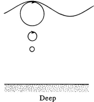

Surface waves are therefore classified as deep-water waves if the depth is more than one-third of the wavelength. Deep-water waves are dispersive since their phase speed depends on wavelength.
A common period of wind-generated surface gravity waves in the ocean is \( \sim 10 \) s, which via the dispersion relation \(c = \frac{\omega}{k} = \sqrt{\frac{g}{k} \tanh(kH)} = \sqrt{\frac{g \lambda}{2\pi} \tanh\left(\frac{2\pi H}{\lambda}\right)}\), corresponds to a wavelength of 150 m.
The water depth on a typical continental shelf is \( \sim 100 \) m, and in the open ocean it is \( \sim 4 \) km.
The dominant wind waves in the ocean, even over the continental shelf, act as deep-water waves and do not feel the effects of the ocean bottom until they arrive near a coastline.
This is not true of the very long wavelength gravity waves or tsunamis generated by tidal forces or seismic activity. Such waves may have wavelengths of hundreds of kilometers.
In deep water, the semi-major and semi-minor axes of particle orbits produced by small-amplitude gravity waves are nearly equal to \( ae^{kz} \) since
\[
\frac{\cosh(k(z + H))}{\sinh(kH)} \approx \frac{\sinh(k(z + H))}{\sinh(kH)} \approx e^{kz}
\]
for \( kH > 2.0 \), so the deep water wave-induced fluid particle motions are
\[
\xi \equiv -ae^{kz_0} \sin(kx_0 - \omega t) \quad \text{and} \quad \zeta \equiv ae^{kz_0} \cos(kx_0 - \omega t)
\]
These particle orbits are circles  At the surface, their radius is \( a \), the amplitude of the wave